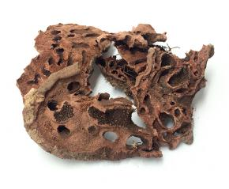
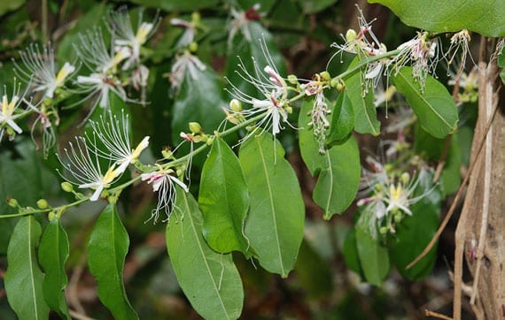

“ตามปกติแต่ละจังหวัดจะมีการจดทะเบียนรายชื่อสมุนไพรที่มีอยู่ในจังหวัดนั้นๆ แบ่งออกเป็น 3 ประเภท คือ 1. สมุนไพรเพื่อการศึกษา 2. สมุนไพรพืชเศรษฐกิจ
และ 3. สมุนไพรเสี่ยงอาจสูญพันธุ์ โดยจะมีคณะผู้เชี่ยวชาญเข้ามาจัดทำข้อมูลของสมุนไพรทั้ง 3 ประเภท จากนั้นได้เลือกออกมาเป็น 22 ชนิด ที่เสี่ยงอาจจะสูญพันธุ์
เนื่องจากเป็นสมุนไพรที่เติบโตช้า เมื่อจะใช้ต้องใช้ทั้งต้น บางชนิดใช้ทั้งราก และต้องใช้บ่อยจึงจะสามารถรักษาอาการได้” นายนันทศักดิ์ กล่าว
นายนันทศักดิ์ กล่าวว่า คณะกรรมการคุ้มครองและส่งเสริมภูมิปัญญาการแพทย์แผนไทยได้ประชุมหารือกัน โดยเลือกสมุนไพร 6 ชนิดจาก 22 ชนิดขึ้นมา
คือ ถั่วดินโคก เทพทาโร มะตูมนิ่ม มะหาด เร่ว และ หัวร้อยรู นอกจากนี้ ยังเสนอสมุนไพร “กระวาน” ขึ้นมาเป็นพิเศษด้วยอีกชนิดหนึ่ง เพื่อประกาศคุ้มครองและ
เป็นสมุนไพรที่ต้องควบคุม โดยหากใครมีสมุนไพร 7 ตัวนี้อยู่ในครอบครองไม่ได้ถือว่ามีความผิด เพียงแต่ต้องแจ้งมาทาง สธ. ให้รับทราบว่ามีอยู่เท่าใด
เพื่อที่จะจัดทำแผนส่งเสริมการปลูกต่อไป
 |
ถั่วดินโคก
จัดเป็นไม้พุ่มขนาดเล็ก ลำต้นลักษณะสั้น ใบเป็นใบประกอบแบบขนนก ดอกเป็นแบบช่อกระจะ สรรพคุณ ช่วยขับน้ำ แก้พิษงู แก้พิษหัด พิษอีสุกอีใส แหล่งอ้างอิง |
|
เทพทาโร
เป็นไม้ต้นขนาดใหญ่ เปลือกต้นสีเทาเข้ม ใบเป็นใบเดี่ยวรูปรีแกมรูปไข่ สรรพคุณ เนื้อไม้ใช้เป็นยาแก้จุกเสียด ขับลมในล้าไส้และกระเพาะอาหาร ส่วนใบ แก้แน่นท้อง ท้องอืด ท้องเฟ้อ แหล่งอ้างอิง |
|
|
มะตูมนิ่ม
ผลกลมรีคล้ายไข่ เนื้อสีส้ม สรรพคุณ เป็นยาอายุวัฒนะ บำรุงกำลัง ช่วยให้เจริญอาหาร ขับผายลมดีมาก แหล่งอ้างอิง |
|
|
มะหาด
สมุนไพรเลื่องชื่อด้านความสวยความงาม เปลือกของต้นมะหาด สรรพคุณ ช่วยลดความเข้มของเม็ดสีเมลานินในผิว ทำให้ผิวแลดูกระจ่างใส แหล่งอ้างอิง |
|
 |
เร่ว
จัดเป็นพืชล้มลุก ผลค่อนข้างกลม เมล็ดแข็ง เนื้อในเมล็ดมีสีขาวอมเหลือง มีกลิ่นหอมฉุน สรรพคุณ ช่วยบำรุงธาตุในร่างกาย ช่วยลดไขมันในเลือด ช่วยแก้ธาตุพิการ แหล่งอ้างอิง |
|  |
หัวร้อยรู
เป็นพืชจำพวกหัว ที่อาศัยเกาะตามต้นไม้อื่น ต้นแก่มีหัวกลมโต สรรพคุณ ช่วยบำรุงหัวใจ ขับชีพจร ขับพยาธิ แก้พิษในข้อในกระดูก รักษามะเร็ง แหล่งอ้างอิง |
|
กระทุ่มนา
เป็นไม้ต้นผลัดใบขนาดกลาง ใบเป็นใบเดี่ยว ออกเรียงตรงข้ามเวียนสลับตั้งฉากกัน สรรพคุณ ใบช่วยลดความดันโลหิต เป็นยาแก้ท้องร่วง ปวดมวนท้อง แหล่งอ้างอิง |
|
|
ขันทองพยาบาท
ไม้ยืนต้นขนาดกลาง กิ่งก้านอ่อน กิ่งห้อยลง กิ่งมีขนรูปดาว สรรพคุณ เนื้อไม้แก้น้ำเหลืองเสีย แก้น้ำเหลืองเสีย แหล่งอ้างอิง |
|
 |
จุกโรหินี
เป็นไม้ล้มลุกที่มีลำต้นเลื้อยทอดไปตามต้นไม้ เถากลมสีเขียว ตามข้อเถามีรากงอกออก สรรพคุณ แก้ปวดท้อง เนื่องจากโรคกระเพาะอาหารอักเสบ แหล่งอ้างอิง |
 |
ชะเอมไทย
เป็นไม้ยืนต้นขนาดกลาง ตามลำต้นกิ่งก้านจะมีหนาม ใบเล็กละเอียดเป็นฝอย สรรพคุณ เนื้อไม้ช่วยขับเสมหะ แก้ไอ เลือดออกตามไรฟัน โรคในลำคอ แหล่งอ้างอิง |
|  |
ชิงชี่
เป็นไม้พุ่มกึ่งไม้ยืนต้นขนาดเล็ก กิ่งคดไปมา มีหนาม สรรพคุณ ใช้เป็นยาแก้ไข้ แก้ไข้สันนิบาต ช่วยขับน้ำเหลืองเสีย แหล่งอ้างอิง |
|
ตับเต่า
เป็นไม้ยืนต้นผลัดใบขนาดเล็กถึงขนาดกลาง ทรงพุ่มโปร่งเป็นรูปกรวย สรรพคุณ แก่นและรากใช้ต้มหรือฝนกินเป็นยาแก้ไข้ ลดไข้ ดับพิษร้อน แก้ร้อนใน แหล่งอ้างอิง |
|
 |
นางแย้มป่า
เป็นไม้พุ่มขนาดย่อม ลำต้นตั้งตรง กิ่งอ่อนและต้นเปราะ สรรพคุณ รากใช้ทำเป็นยาแก้ไข้ รักษาลำไส้อักเสบ ช่วยขับปัสสาวะ แหล่งอ้างอิง |
 |
ปลาไหลเผือก
เป็นไม้พุ่มขนาดเล็ก แตกกิ่งก้านน้อย กิ่งอ่อนมีขนสีน้ำตาล สรรพคุณ รากใช้เป็นยาบำรุงกำลัง บำรุงร่างกาย ช่วยรักษาความดันโลหิตสูง ใช้เป็นยาถ่ายพิษต่างๆ แหล่งอ้างอิง |
 |
พังคี
เป็นไม้พุ่มขนาดเล็ก ใบเป็นรูปไข่แกมรูปหอก โคนใบมน ปลายใบแหลม สรรพคุณ รากช่วยแก้อาการจุกเสียด แก้ท้องอืด ท้องเฟ้อ ปวดท้อง ปวดแน่นท้อง แหล่งอ้างอิง |
 |
มะคังแดง
เป็นไม้พุ่มกึ่งไม้ยืนต้นขนาดเล็ก มีขนนุ่มคล้ายกำมะหยี่ขึ้นตามลำต้น และกิ่งมีหนามขนาดใหญ่โดยรอบ สรรพคุณ แก้เลือดลมเดินไม่สะดวก แก้พิษโลหิตและน้ำเหลือง แหล่งอ้างอิง |
 |
สะค้าน
ไม้เถาขนาดกลาง พาดพันต้นไม้อื่น เถาอ่อนสีเขียว เถาแก่สีน้้าตาลเทา สรรพคุณ แก้หืด แก้จุกเสียด และบำรุงธาตุ แหล่งอ้างอิง |
 |
สารภีป่า
เ ป็นไม้ยืนต้นไม่ผลัดใบขนาดกลาง ลำต้นมีลักษณะคดงอ ดอกสีขาว สรรพคุณ ดอกใช้ทำเป็นยาบำรุงหัวใจ ช่วยขยายหลอดลม และช่วยขับลม แหล่งอ้างอิง |
|
อบเชยไทย
เป็นไม้ยืนต้นขนาดกลาง ทรงพุ่มกลม ใบเป็นรูปขอบขนาน สรรพคุณ เปลือกและเนื้อไม้ใช้ทำเป็นยาบำรุงร่างกาย ทำให้เลือดหมุนเวียนดี ใช้ปรุงผสมเป็นยาหอมและยานัตถุ์ แหล่งอ้างอิง |
|
 |
เฉียงพร้านางแอ
เป็นไม้ยืนต้นไม่ผลัดใบขนาดกลาง ใบเป็นรูปรี รูปไข่กลับ สรรพคุณ ใช้ต้มกับน้ำดื่มช่วยทำให้เจริญอาหาร ช่วยขับเสมหะและโลหิต แหล่งอ้างอิง |
|
เถาเอ็นอ่อน
เป็นไม้เลื้อยจำพวกเถาเนื้อแข็ง เปลือกเถาเรียบหนาเป็นสีน้ำตาลอมสีดำ สรรพคุณ ใช้เป็นยาฟอกเลือด นำมาต้มกินจะช่วยทำให้จิตใจชุ่มชื่น แหล่งอ้างอิง |
|
 |
เปราะหอม
จัดเป็นพืชล้มลุก มีลำต้นเป็นหัวอยู่ใต้ดิน มีกลิ่นหอมเฉพาะตัว สรรพคุณ มีฤทธิ์ในการต่อต้านอนุมูลอิสระ แก้ปวดศีรษะ คลายเครียด แหล่งอ้างอิง |
จัดทำโดย
6304062616030 กฤษดากร ศรีบรรจง CS KMUTNB